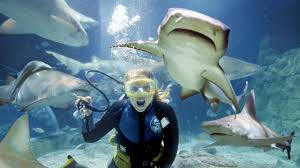

History
Swimming with sharks is an exhilarating activity that allows people to get up close and personal with these magnificent creatures. The practice began as a way for marine biologists to study sharks in their natural habitat, but it has since become a popular adventure sport. Shark diving offers a unique opportunity to observe sharks in the wild, promoting conservation and awareness. The activity is conducted in various locations around the world, including the Bahamas, South Africa, and Australia. Safety measures and professional guides ensure that the experience is both thrilling and secure. Swimming with sharks provides an unforgettable experience and a deeper understanding of these often-misunderstood animals.

Learn More About Shark Diving